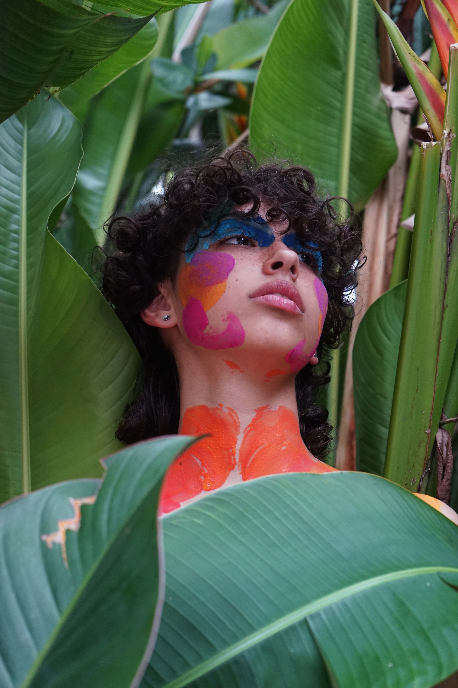
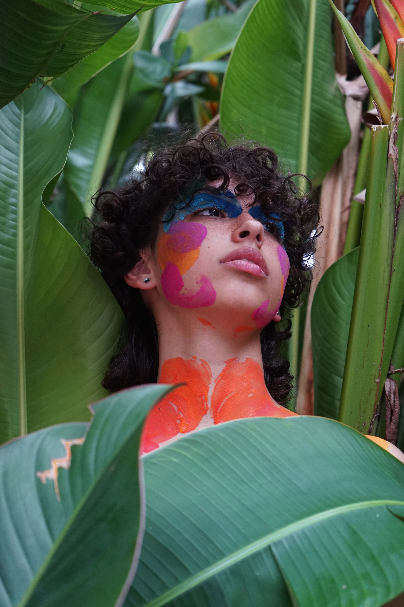
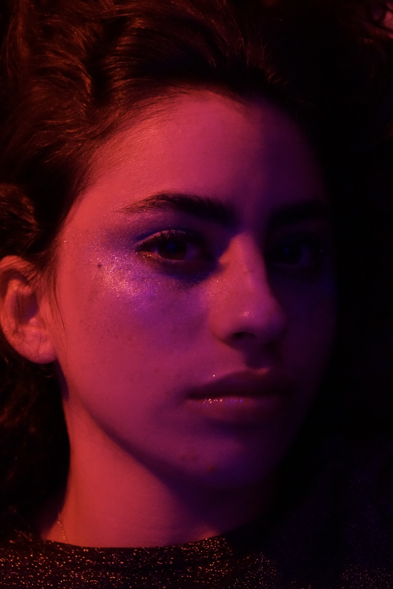
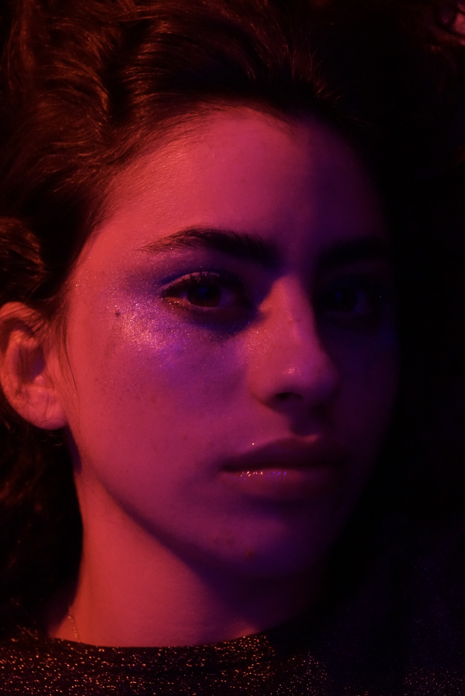

Welcome to My Portfolio!
Gallery
 



My Projects
Moments of Mirth
This project is something really meaningful to me. I took a lot of these photos back in late 2020 with a couple of my best friends. It was one of the first times I got to go outside take my mask off and shoot a couple of photos. It was definitely the early days when it comes to my photography skills but some of the most heartwarming photos come from a true lack of knowledge. I've grown and advance my knowledge in the world of photography for years now and I'm excited to present some of my earlier works.
Concrete Canvas
My second project was the first project that felt more serious and I loved that. I took these pictures in 2021 right after I started an instagram for my photography. I got a model, a friend of mine, and we strolled around Wynwood taking pictures at whatever looked like a lovely background. We did a couple of outfit changes and had a great time experimenting with the photos. These pictures felt more professional, at the time, than any I had taken before. It was such a relief to know that I could advance my photography skills in such a short amount of time.

Luminous Illusions
 

My third project was heavily based on the theme and colors of the show Euphoria. It was during the time where Euphoria's vibe was very popular and I wanted to recreate that in any way possible. I used many techniques to portray fun colors and cool patterns. I had the most fun with this project. I love the detail in the makeup and the variety of colors I used. Since this project was also in 2021 I soon want to recreate this with all the knowledge I have about cameras now.